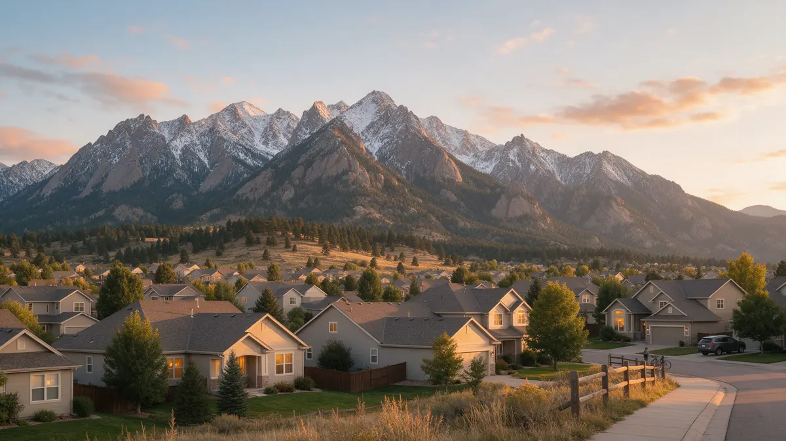

Colorado Home Plumbing Handbook: Leaks & Repairs

A practical handbook for Colorado homeowners facing a leak, a clog or a failing fixture. Each guide walks through what to do in the first few minutes, the warning signs worth acting on, how a plumber usually diagnoses the problem, and the questions to ask, organized by service and by Colorado city.
Call (720) 794-0974 to be connected with a local plumber, or visit water leak repair in Colorado.
Plumbing services in Colorado
- Water Leak Repair
- Emergency Plumbing
- Drain Cleaning
- Water Heater Services
- Sewer Line Repair
- Gas Line Services
- Slab Leak Repair
- Pipe Repair & Replacement
- Toilet Repair
- Bathroom Plumbing
Water leak repair by Colorado city
- Water leak repair in Denver
- Water leak repair in Evergreen
- Water leak repair in Boulder
- Water leak repair in Arvada
- Water leak repair in Colorado Springs
- Water leak repair in Broomfield
- Water leak repair in Woodland Park
- Water leak repair in Westminster
- Water leak repair in Lakewood
- Water leak repair in Golden
- Water leak repair in Conifer
- Water leak repair in Aurora
- Water leak repair in Loveland
- Water leak repair in Fort Collins
- Water leak repair in Dillon
- Water leak repair in Fountain
- Water leak repair in Pueblo
- Water leak repair in Castle Rock
- Water leak repair in Littleton
- Water leak repair in Morrison
Also see the Colorado Plumbing Guide.